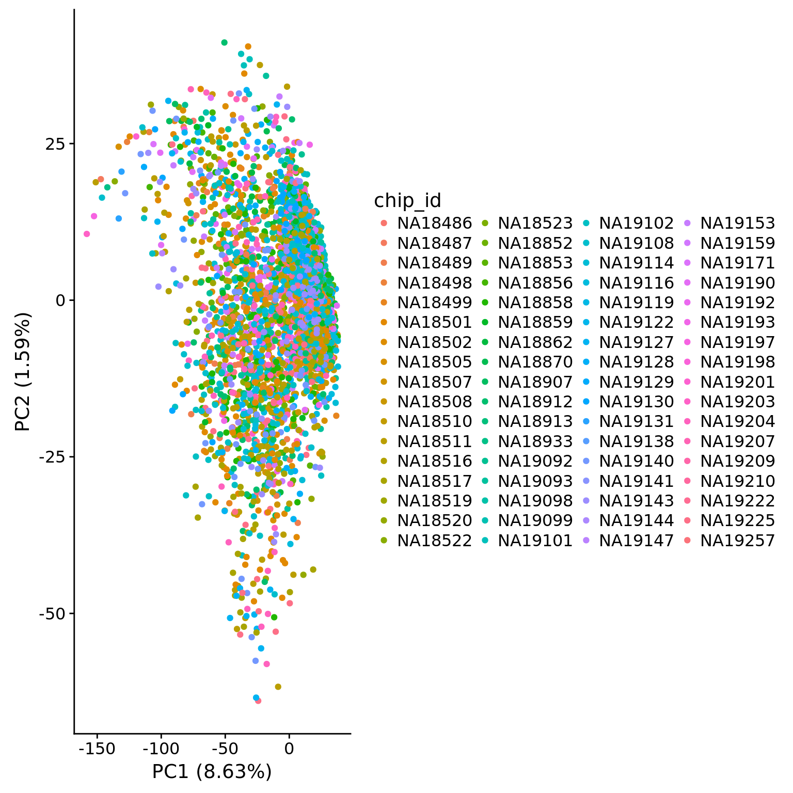
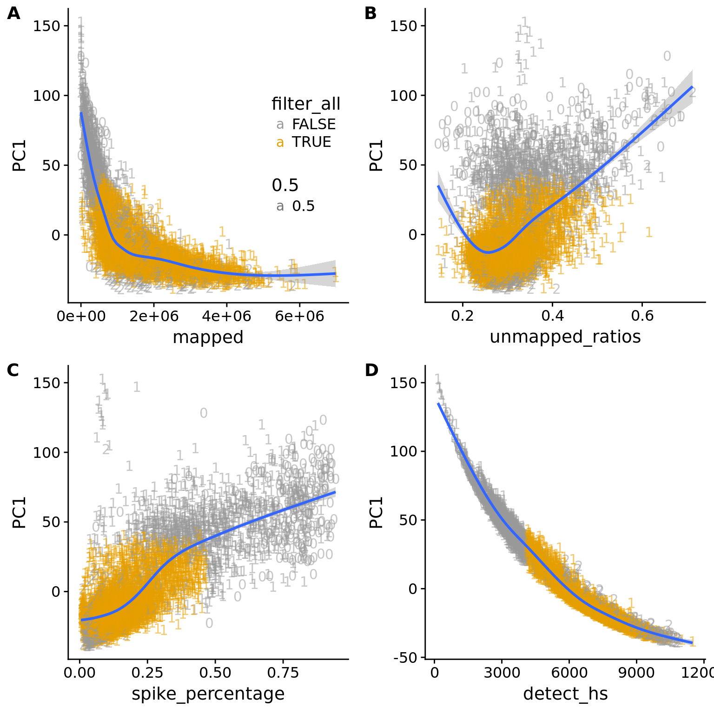

QC of single cell libraries
PoYuan Tung
2017-09-13
Last updated: 2018-02-13
Code version: cce60cf
This is for qc of the samples. Based on obsevation under the scope and the sequencing results, samples with bad quality will be removed.
Setup
library("cowplot")
library("dplyr")
library("ggplot2")
library("tidyr")
library("edgeR")
theme_set(theme_cowplot())
source("../code/functions.R")
library("Biobase")# The palette with grey:
cbPalette <- c("#999999", "#E69F00", "#56B4E9", "#009E73", "#F0E442", "#0072B2", "#D55E00", "#CC79A7")Import data.
eset <- readRDS("../data/eset.rds")
anno <- pData(eset)Total mapped reads reads
## calculate the cut-off
cut_off_reads <- quantile(anno[anno$cell_number == 0,"mapped"], 0.95)
cut_off_reads 95%
735553.8 anno$cut_off_reads <- anno$mapped > cut_off_reads
## numbers of cells
sum(anno[anno$cell_number == 1, "mapped"] > cut_off_reads)[1] 4530sum(anno[anno$cell_number == 1, "mapped"] <= cut_off_reads)[1] 1389## density plots
plot_reads <- ggplot(anno[anno$cell_number == 0 |
anno$cell_number == 1 , ],
aes(x = mapped, fill = as.factor(cell_number))) +
geom_density(alpha = 0.5) +
geom_vline(xintercept = cut_off_reads, colour="grey", linetype = "longdash") +
labs(x = "Total mapped reads", title = "Number of total mapped reads", fill = "Cell number")
plot_reads
Unmapped ratios
Note: Using the 5% cutoff of samples with no cells excludes all the samples
## calculate unmapped ratios
anno$unmapped_ratios <- anno$unmapped/anno$umi
## cut off
cut_off_unmapped <- quantile(anno[anno$cell_number == 0,"unmapped_ratios"], 0.05)
cut_off_unmapped 5%
0.1952875 anno$cut_off_unmapped <- anno$unmapped_ratios < cut_off_unmapped
## numbers of cells
sum(anno[anno$cell_number == 1, "unmapped_ratios"] >= cut_off_unmapped)[1] 5891sum(anno[anno$cell_number == 1, "unmapped_ratios"] < cut_off_unmapped)[1] 28## density plots
plot_unmapped <- ggplot(anno[anno$cell_number == 0 |
anno$cell_number == 1 , ],
aes(x = unmapped_ratios *100, fill = as.factor(cell_number))) +
geom_density(alpha = 0.5) +
geom_vline(xintercept = cut_off_unmapped *100, colour="grey", linetype = "longdash") +
labs(x = "Unmapped reads/ total reads", title = "Unmapped reads percentage")
plot_unmapped
ERCC percentage
Note: Beacuse not all samples include ERCC, this is not a good cutoff.
## calculate ercc reads percentage
anno$ercc_percentage <- anno$reads_ercc / anno$mapped
## cut off
cut_off_ercc <- quantile(anno[anno$cell_number == 0,"ercc_percentage"], 0.05)
cut_off_ercc 5%
2.582295e-06 anno$cut_off_ercc <- anno$ercc_percentage < cut_off_ercc
## numbers of cells
sum(anno[anno$cell_number == 1, "ercc_percentage"] >= cut_off_ercc)[1] 5772sum(anno[anno$cell_number == 1, "ercc_percentage"] < cut_off_ercc)[1] 147## density plots
plot_ercc <- ggplot(anno[anno$cell_number == 0 |
anno$cell_number == 1 , ],
aes(x = ercc_percentage *100, fill = as.factor(cell_number))) +
geom_density(alpha = 0.5) +
geom_vline(xintercept = cut_off_ercc *100, colour="grey", linetype = "longdash") +
labs(x = "ERCC reads / total mapped reads", title = "ERCC reads percentage")
plot_ercc
Spike-in percentage
Note: Using the percentage of all the kinds of spike-in as the cutoff. Instead of 5%, 10% seem to be more reasonable due to different amounts of total spike-in.
## calculate worm and fly reads percentage
anno$spike_percentage <- apply(anno[,19:21],1,sum) / anno$mapped
## cut off
cut_off_spike <- quantile(anno[anno$cell_number == 0,"spike_percentage"], 0.10)
cut_off_spike 10%
0.4692639 anno$cut_off_spike <- anno$spike_percentage < cut_off_spike
## numbers of cells
sum(anno[anno$cell_number == 1, "spike_percentage"] >= cut_off_spike)[1] 467sum(anno[anno$cell_number == 1, "spike_percentage"] < cut_off_spike)[1] 5452## density plots
plot_spike <- ggplot(anno[anno$cell_number == 0 |
anno$cell_number == 1 , ],
aes(x = spike_percentage *100, fill = as.factor(cell_number))) +
geom_density(alpha = 0.5) +
geom_vline(xintercept = cut_off_spike *100, colour="grey", linetype = "longdash") +
labs(x = "spike-in reads / total mapped reads", title = "Spike-in reads percentage")
plot_spike
Number of genes detected
## cut off
cut_off_genes <- quantile(anno[anno$cell_number == 0,"detect_hs"], 0.90)
cut_off_genes 90%
4052.7 anno$cut_off_genes <- anno$detect_hs > cut_off_genes
## numbers of cells
sum(anno[anno$cell_number == 1, "detect_hs"] > cut_off_genes)[1] 5171sum(anno[anno$cell_number == 1, "detect_hs"] <= cut_off_genes)[1] 748## density plots
plot_gene <- ggplot(anno[anno$cell_number == 0 |
anno$cell_number == 1 , ],
aes(x = detect_hs, fill = as.factor(cell_number))) +
geom_density(alpha = 0.5) +
geom_vline(xintercept = cut_off_genes, colour="grey", linetype = "longdash") +
labs(x = "Gene numbers", title = "Numbers of detected genes")
plot_gene
plot_grid(plot_reads + theme(legend.position=c(.7,.7)),
plot_unmapped + theme(legend.position = "none"),
plot_spike + theme(legend.position = "none"),
plot_gene + theme(legend.position = "none"),
labels = LETTERS[1:4])
Linear Discriminat Analysis
Total molecule vs concentration
library(MASS)
Attaching package: 'MASS'The following object is masked from 'package:dplyr':
select## create 3 groups according to cell number
group_3 <- rep("two",dim(anno)[1])
group_3[grep("0", anno$cell_number)] <- "no"
group_3[grep("1", anno$cell_number)] <- "one"
## create data frame
data <- anno %>% dplyr::select(experiment:concentration, mapped, molecules)
data <- data.frame(data, group = group_3)
## perform lda
data_lda <- lda(group ~ concentration + molecules, data = data)
data_lda_p <- predict(data_lda, newdata = data[,c("concentration", "molecules")])$class
## determine how well the model fix
table(data_lda_p, data[, "group"])
data_lda_p no one two
no 0 0 0
one 234 5882 228
two 0 37 51data$data_lda_p <- data_lda_p
## plot before and after
plot_before <- ggplot(data, aes(x = concentration, y = molecules / 10^3,
color = as.factor(group))) +
geom_text(aes(label = cell_number, alpha = 0.5)) +
labs(x = "Concentration", y = "Gene molecules (thousands)", title = "Before") +
scale_color_brewer(palette = "Dark2") +
theme(legend.position = "none")
plot_after <- ggplot(data, aes(x = concentration, y = molecules / 10^3,
color = as.factor(data_lda_p))) +
geom_text(aes(label = cell_number, alpha = 0.5)) +
labs(x = "Concentration", y = "Gene molecules (thousands)", title = "After") +
scale_color_brewer(palette = "Dark2") +
theme(legend.position = "none")
plot_grid(plot_before + theme(legend.position=c(.8,.85)),
plot_after + theme(legend.position = "none"),
labels = LETTERS[1:2])
Reads to molecule conversion
## calculate convertion
anno$dm_conversion <- anno$mol_dm / anno$reads_dm
anno$conversion <- anno$mol_hs / anno$reads_hs
ggplot(anno, aes(x = dm_conversion, y = conversion,
color = as.factor(cell_number))) +
geom_text(aes(label = cell_number)) +
labs(x = "Convertion of Fly spike-ins", y = "Conversion of genes") +
scale_color_brewer(palette = "Dark2") +
theme(legend.position = "none")Warning: Removed 4 rows containing missing values (geom_text).
## try lda
data$conversion <- anno$conversion
data$dm_conversion <- anno$dm_conversion
data_ercc_lda <- lda(group ~ dm_conversion + conversion, data = data)
data_ercc_lda_p <- predict(data_ercc_lda, newdata = data[,c("dm_conversion", "conversion")])$classWarning in FUN(newX[, i], ...): no non-missing arguments to min; returning
InfWarning in FUN(newX[, i], ...): no non-missing arguments to min; returning
Inf
Warning in FUN(newX[, i], ...): no non-missing arguments to min; returning
Inf
Warning in FUN(newX[, i], ...): no non-missing arguments to min; returning
Inf## determine how well the model fix
table(data_ercc_lda_p, data[, "group"])
data_ercc_lda_p no one two
no 137 108 5
one 97 5807 274
two 0 0 0data$data_ercc_lda_p <- data_ercc_lda_p
## cutoff
out_ercc_con <- anno %>% filter(cell_number == "1", dm_conversion > .094)
anno$conversion_outlier <- anno$cell_number == 1 & anno$dm_conversion > .094
## plot before and after
plot_ercc_before <- ggplot(data, aes(x = dm_conversion, y = conversion,
color = as.factor(group))) +
geom_text(aes(label = cell_number, alpha = 0.5)) +
labs(x = "Convertion of Fly spike-ins", y = "Conversion of genes", title = "Before") +
scale_color_brewer(palette = "Dark2") +
theme(legend.position = "none")
plot_ercc_after <- ggplot(data, aes(x = dm_conversion, y = conversion,
color = as.factor(data_ercc_lda_p))) +
geom_text(aes(label = cell_number, alpha = 0.5)) +
labs(x = "Convertion of Fly spike-ins", y = "Conversion of genes", title = "After") +
scale_color_brewer(palette = "Dark2") +
theme(legend.position = "none")
plot_grid(plot_ercc_before,
plot_ercc_after,
labels = LETTERS[3:4])Warning: Removed 4 rows containing missing values (geom_text).Warning: Removed 4 rows containing missing values (geom_text).
Filter
Final list
## all filter
anno$filter_all <- anno$cell_number == 1 &
anno$valid_id &
## anno$cut_off_reads &
## anno$cut_off_unmapped &
## anno$cut_off_ercc &
anno$cut_off_spike &
anno$cut_off_genes
sort(table(anno[anno$filter_all, "chip_id"]))
NA18498 NA19203 NA19159 NA18913 NA19204 NA19092 NA18505 NA19193 NA18519
19 24 31 49 49 51 53 56 62
NA19143 NA18522 NA18859 NA19098 NA19130 NA18517 NA19210 NA19206 NA18862
64 65 65 65 65 67 69 72 73
NA19102 NA19127 NA18870 NA18856 NA18907 NA18853 NA18489 NA18912 NA19114
73 73 74 76 77 79 82 82 82
NA19140 NA18852 NA19209 NA19108 NA19153 NA19257 NA18855 NA19225 NA18516
82 85 86 88 89 89 90 91 92
NA19101 NA19190 NA19099 NA19093 NA19116 NA19160 NA19128 NA19144 NA18511
94 96 98 102 106 107 108 111 112
NA19152 NA18520 NA18499 NA19207 NA18858 NA18508 NA18502 NA18501 NA18507
119 136 138 150 153 168 194 198 306 write.table(data.frame(row.names(anno), anno[,"filter_all"]),
file = "../data/quality-single-cells.txt", quote = FALSE,
sep = "\t", row.names = FALSE, col.names = FALSE)Plots
genes_unmapped <- ggplot(anno,
aes(x = detect_hs, y = unmapped_ratios * 100,
col = as.factor(valid_id),
label = as.character(cell_number),
height = 600, width = 2000)) +
scale_colour_manual(values=cbPalette) +
geom_text(fontface = 3, alpha = 0.5) +
geom_vline(xintercept = cut_off_genes,
colour="grey", linetype = "longdash") +
geom_hline(yintercept = cut_off_unmapped * 100,
colour="grey", linetype = "longdash") +
labs(x = "Number of detected genes / sample",
y = "Percentage of unmapped reads (%)")
genes_spike <- ggplot(anno,
aes(x = detect_hs, y = spike_percentage * 100,
col = as.factor(valid_id),
label = as.character(cell_number),
height = 600, width = 2000)) +
scale_colour_manual(values=cbPalette) +
scale_shape_manual(values=c(1:10)) +
geom_text(fontface = 3, alpha = 0.5) +
geom_vline(xintercept = cut_off_genes,
colour="grey", linetype = "longdash") +
geom_hline(yintercept = cut_off_spike * 100,
colour="grey", linetype = "longdash") +
labs(x = "Number of detected genes / samlpe",
y = "Percentage of spike-in reads (%)")
reads_unmapped_num <- ggplot(anno,
aes(x = mapped, y = unmapped_ratios * 100,
col = as.factor(chip_id),
label = as.character(cell_number),
height = 600, width = 2000)) +
geom_text(fontface = 3, alpha = 0.5) +
geom_vline(xintercept = cut_off_reads,
colour="grey", linetype = "longdash") +
geom_hline(yintercept = cut_off_unmapped * 100,
colour="grey", linetype = "longdash") +
labs(x = "Total mapped reads / sample",
y = "Percentage of unmapped reads (%)")
reads_spike_num <- ggplot(anno,
aes(x = mapped, y = spike_percentage * 100,
col = as.factor(chip_id),
label = as.character(cell_number),
height = 600, width = 2000)) +
geom_text(fontface = 3, alpha = 0.5) +
geom_vline(xintercept = cut_off_reads,
colour="grey", linetype = "longdash") +
geom_hline(yintercept = cut_off_spike * 100,
colour="grey", linetype = "longdash") +
labs(x = "Total mapped reads / sample",
y = "Percentage of spike-in reads (%)")
plot_grid(genes_unmapped + theme(legend.position=c(.7,.9)),
genes_spike + theme(legend.position = "none"),
labels = letters[1:2])
plot_grid(reads_unmapped_num + theme(legend.position = "none"),
reads_spike_num + theme(legend.position = "none"),
labels = letters[3:4])
PCA
Before filter
Select the most variable human genes
## look at human genes
eset_hs <- eset[fData(eset)$source == "H. sapiens", ]
head(featureNames(eset_hs))[1] "ENSG00000000003" "ENSG00000000005" "ENSG00000000419" "ENSG00000000457"
[5] "ENSG00000000460" "ENSG00000000938"## remove genes of all 0s
eset_hs_clean <- eset_hs[rowSums(exprs(eset_hs)) != 0, ]
dim(eset_hs_clean)Features Samples
19753 6432 ## convert to log2 cpm
mol_hs_cpm <- cpm(exprs(eset_hs_clean), log = TRUE)
mol_hs_cpm_means <- rowMeans(mol_hs_cpm)
summary(mol_hs_cpm_means) Min. 1st Qu. Median Mean 3rd Qu. Max.
2.750 2.793 3.282 3.945 4.603 13.075 hist(mol_hs_cpm_means)
abline(v = median(mol_hs_cpm_means), col = "red")
mol_hs_cpm <- mol_hs_cpm[mol_hs_cpm_means > median(mol_hs_cpm_means), ]
dim(mol_hs_cpm)[1] 9876 6432Using the genes with reasonable expression levels to perform PCA
## pca of genes with reasonable expression levels
pca_hs <- run_pca(mol_hs_cpm)
## plot
plot_pca(pca_hs$PCs, pcx = 1, pcy = 2, explained = pca_hs$explained,
metadata = pData(eset_hs_clean), color = "batch")
plot_pca(pca_hs$PCs, pcx = 1, pcy = 2, explained = pca_hs$explained,
metadata = pData(eset_hs_clean), color = "cell_number")
plot_pca(pca_hs$PCs, pcx = 1, pcy = 2, explained = pca_hs$explained,
metadata = pData(eset_hs_clean), color = "chip_id")
## combine to investigate the effect
pca_anno <- cbind(anno, pca_hs$PCs)
## total mapped vs pc1
pc1_reads <- ggplot(pca_anno, aes(x = mapped, y = PC1)) +
geom_text(aes(label = cell_number,
col = filter_all, alpha = 0.5)) +
scale_colour_manual(values=cbPalette) +
geom_smooth()
## unmapped ratio vs pc1
pc1_unmapped <- ggplot(pca_anno, aes(x = unmapped_ratios, y = PC1)) +
geom_text(aes(label = cell_number,
col = filter_all, alpha = 0.5)) +
scale_colour_manual(values=cbPalette) +
geom_smooth()
## spike-in ratio vs pc1
pc1_spike <- ggplot(pca_anno, aes(x = spike_percentage, y = PC1)) +
geom_text(aes(label = cell_number,
col = filter_all, alpha = 0.5)) +
scale_colour_manual(values=cbPalette) +
geom_smooth()
## number of detected gene vs pc1
pc1_gene <- ggplot(pca_anno, aes(x = detect_hs, y = PC1)) +
geom_text(aes(label = cell_number,
col = filter_all, alpha = 0.5)) +
scale_colour_manual(values=cbPalette) +
geom_smooth()
plot_grid(pc1_reads + theme(legend.position=c(.7,.5)),
pc1_unmapped + theme(legend.position = "none"),
pc1_spike + theme(legend.position = "none"),
pc1_gene + theme(legend.position = "none"),
labels = LETTERS[1:4])`geom_smooth()` using method = 'gam'
`geom_smooth()` using method = 'gam'
`geom_smooth()` using method = 'gam'
`geom_smooth()` using method = 'gam'
After filter
## filter bad cells
eset_hs_clean_filter <- eset_hs_clean[,anno$filter_all]
dim(eset_hs_clean_filter)Features Samples
19753 4985 ## convert to log2 cpm
mol_hs_cpm_filter <- cpm(exprs(eset_hs_clean_filter), log = TRUE)
stopifnot(rownames(anno[anno$filter_all,]) == colnames(mol_hs_cpm_filter))
mol_hs_cpm_filter_means <- rowMeans(mol_hs_cpm_filter)
summary(mol_hs_cpm_filter_means) Min. 1st Qu. Median Mean 3rd Qu. Max.
2.576 2.626 3.192 3.904 4.687 12.949 hist(mol_hs_cpm_filter_means)
abline(v = median(mol_hs_cpm_filter_means), col = "red")
mol_hs_cpm_filter <- mol_hs_cpm_filter[mol_hs_cpm_filter_means > median(mol_hs_cpm_filter_means), ]
dim(mol_hs_cpm_filter)[1] 9876 4985## pca of genes with reasonable expression levels
pca_hs_filter <- run_pca(mol_hs_cpm_filter)
plot_pca(pca_hs_filter$PCs, pcx = 1, pcy = 2, explained = pca_hs_filter$explained,
metadata = pData(eset_hs_clean_filter), color = "batch")
## combine to investigate the effect
anno_filter <- anno[anno$filter_all,]
pca_anno_filter <- cbind(anno_filter, pca_hs_filter$PCs)
## total mapped vs pc1
pc1_reads_filter <- ggplot(pca_anno_filter, aes(x = mapped, y = PC1)) +
geom_text(aes(label = cell_number,
alpha = 0.5)) +
scale_colour_manual(values=cbPalette) +
geom_smooth()
## unmapped ratio vs pc1
pc1_unmapped_filter <- ggplot(pca_anno_filter, aes(x = unmapped_ratios, y = PC1)) +
geom_text(aes(label = cell_number,
alpha = 0.5)) +
scale_colour_manual(values=cbPalette) +
geom_smooth()
## spike-in ratio vs pc1
pc1_spike_filter <- ggplot(pca_anno_filter, aes(x = spike_percentage, y = PC1)) +
geom_text(aes(label = cell_number,
alpha = 0.5)) +
scale_colour_manual(values=cbPalette) +
geom_smooth()
## number of detected gene vs pc1
pc1_gene_filter <- ggplot(pca_anno_filter, aes(x = detect_hs, y = PC1)) +
geom_text(aes(label = cell_number,
alpha = 0.5)) +
scale_colour_manual(values=cbPalette) +
geom_smooth()
plot_grid(pc1_reads_filter + theme(legend.position=c(.7,.5)),
pc1_unmapped_filter + theme(legend.position = "none"),
pc1_spike_filter + theme(legend.position = "none"),
pc1_gene_filter + theme(legend.position = "none"),
labels = LETTERS[1:4])`geom_smooth()` using method = 'gam'
`geom_smooth()` using method = 'gam'
`geom_smooth()` using method = 'gam'
`geom_smooth()` using method = 'gam'
Session information
sessionInfo()R version 3.4.1 (2017-06-30)
Platform: x86_64-pc-linux-gnu (64-bit)
Running under: Scientific Linux 7.2 (Nitrogen)
Matrix products: default
BLAS: /project2/gilad/jdblischak/miniconda3/envs/scqtl/lib/R/lib/libRblas.so
LAPACK: /project2/gilad/jdblischak/miniconda3/envs/scqtl/lib/R/lib/libRlapack.so
locale:
[1] LC_CTYPE=en_US.UTF-8 LC_NUMERIC=C
[3] LC_TIME=en_US.UTF-8 LC_COLLATE=en_US.UTF-8
[5] LC_MONETARY=en_US.UTF-8 LC_MESSAGES=en_US.UTF-8
[7] LC_PAPER=en_US.UTF-8 LC_NAME=C
[9] LC_ADDRESS=C LC_TELEPHONE=C
[11] LC_MEASUREMENT=en_US.UTF-8 LC_IDENTIFICATION=C
attached base packages:
[1] parallel methods stats graphics grDevices utils datasets
[8] base
other attached packages:
[1] testit_0.6 bindrcpp_0.2 MASS_7.3-45
[4] Biobase_2.38.0 BiocGenerics_0.24.0 edgeR_3.20.1
[7] limma_3.34.1 tidyr_0.7.1 dplyr_0.7.4
[10] cowplot_0.9.1 ggplot2_2.2.1
loaded via a namespace (and not attached):
[1] Rcpp_0.12.13 RColorBrewer_1.1-2 compiler_3.4.1
[4] git2r_0.19.0 plyr_1.8.4 bindr_0.1
[7] tools_3.4.1 digest_0.6.12 nlme_3.1-131
[10] evaluate_0.10.1 tibble_1.3.3 gtable_0.2.0
[13] lattice_0.20-34 mgcv_1.8-17 pkgconfig_2.0.1
[16] rlang_0.1.2 Matrix_1.2-7.1 yaml_2.1.14
[19] stringr_1.2.0 knitr_1.16 locfit_1.5-9.1
[22] rprojroot_1.2 grid_3.4.1 glue_1.1.1
[25] R6_2.2.0 rmarkdown_1.6 purrr_0.2.2
[28] magrittr_1.5 backports_1.0.5 scales_0.5.0
[31] htmltools_0.3.6 assertthat_0.1 colorspace_1.3-2
[34] labeling_0.3 stringi_1.1.2 lazyeval_0.2.0
[37] munsell_0.4.3 This R Markdown site was created with workflowr